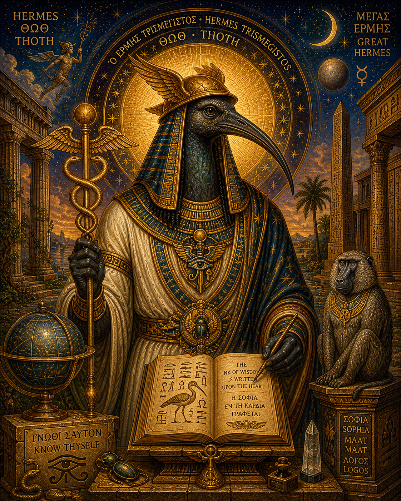

Hermes-Thoth
Guide of Souls, Lord of Words
Key Inscriptions
[PLACEHOLDER — First key inscription from the image]
— [Source]
[PLACEHOLDER — Second key inscription]
— [Source]
[PLACEHOLDER — Third key inscription]
— [Source]
[PLACEHOLDER — Fourth key inscription]
— [Source]
Archetypal Function
[PLACEHOLDER — Hermes-Thoth as the principle of interpretation, mediation, and the hermetic transmission between realms.]
The Shadow Forms
[PLACEHOLDER — Where the gift of interpretation becomes manipulation, or where the messenger refuses to arrive.]
Integration
[PLACEHOLDER — What Hermes-Thoth contributes — the capacity to translate between realms, to carry meaning across thresholds.]
Symbolic Vocabulary
Caduceus
[PLACEHOLDER — Brief gloss]
Ibis
[PLACEHOLDER — Brief gloss]
Winged Sandals
[PLACEHOLDER — Brief gloss]
Scroll
[PLACEHOLDER — Brief gloss]
Within the Constellation
Most closely related to: